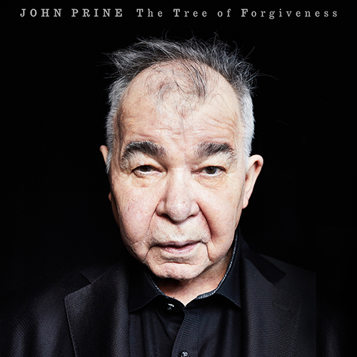
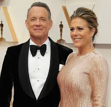
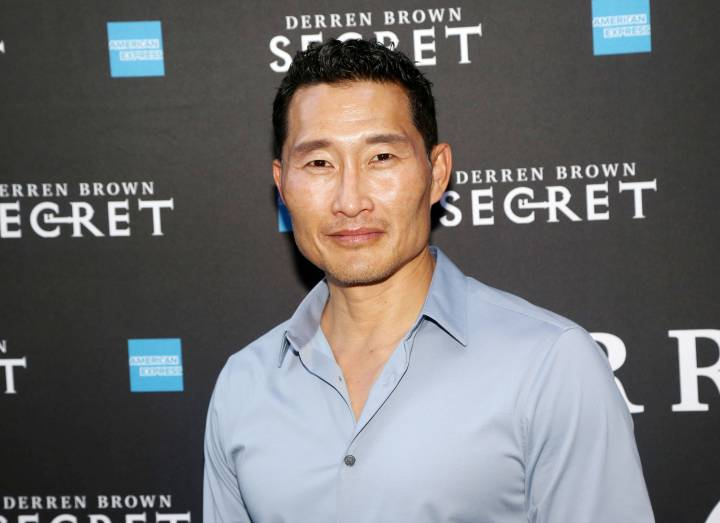

News
On March 23, Mayor John Tory declared an Emergency Opens in new window in the city of Toronto. The declaration of a municipal emergency PDF is part of the City’s ongoing efforts to stop the spread of COVID-19 and will ensure the municipal government can continue to act and respond quickly to the pandemic and any other events that arise in the weeks ahead. Listen to a message from Mayor John Tory Opens in new window and hear more about the importance of staying home Opens in new window and what you can do to help. Toronto Public Health has had 591 cases of COVID-19 reported in Toronto. Currently, 67 of these people are hospitalized and there are 30 in ICU. Among cases of COVID-19 in Toronto, there have been 6 deaths to-date. There have been 30 other people diagnosed with COVID-19 who have recovered from their illness. This data was extracted from the Integrated Public Health Information System at 1 p.m. on March 30, 2020. The numbers may differ from other sources, as data are extracted at different times. If you think you have COVID-19 symptoms or have been in close contact with someone who has it, find out if you should visit an assessment centre and where the nearest location is.
As part of the daily ministerial update on the federal plan to combat the novel coronavirus, Defence Minister Harjit Sajjan and Chief of Defence Staff Jonathan Vance offered more details about how the Canadian Armed Forces are planning to handle any calls to assist pandemic response efforts. Sajjan said that, in anticipation of a surge in cases, the military took precautionary measures to make sure their ranks stayed healthy and remained ready to respond, including ordering members to sequester themselves from the general public. These efforts would be in addition to being able to respond to other emergencies, like the widespread flooding seen around this time last year.
On March 23, Mayor John Tory declared an Emergency Opens in new window in the city of Toronto. The declaration of a municipal emergency PDF is part of the City’s ongoing efforts to stop the spread of COVID-19 and will ensure the municipal government can continue to act and respond quickly to the pandemic and any other events that arise in the weeks ahead. Listen to a message from Mayor John Tory Opens in new window and hear more about the importance of staying home Opens in new window and what you can do to help. Toronto Public Health has had 591 cases of COVID-19 reported in Toronto. Currently, 67 of these people are hospitalized and there are 30 in ICU. Among cases of COVID-19 in Toronto, there have been 6 deaths to-date. There have been 30 other people diagnosed with COVID-19 who have recovered from their illness. This data was extracted from the Integrated Public Health Information System at 1 p.m. on March 30, 2020. The numbers may differ from other sources, as data are extracted at different times. If you think you have COVID-19 symptoms or have been in close contact with someone who has it, find out if you should visit an assessment centre and where the nearest location is.
Sports
Next year’s Tokyo Olympics will now officially open on 23 July 2021 – 364 days later than planned – in order to give organisers the time needed to prepare after the disruption caused by the Covid-19 pandemic. The decision was confirmed by the International Olympic Committee following a conference call between its president, Thomas Bach, and the international sports federations on Monday. Bach gave them one choice of a new date – 23 July to 8 August – before asking the federations for a show of support, which was unanimous.
The decision was confirmed by the International Olympic Committee following a conference call between its president, Thomas Bach, and the international sports federations on Monday. Bach gave them one choice of a new date – 23 July to 8 August – before asking the federations for a show of support, which was unanimous.
The new dates, exactly one year after those originally planned for 2020, also have the added benefit that any disruption that the postponement will cause to the international sports calendar can be kept to a minimum. Additionally, they will provide sufficient time to finish the qualification process. The same heat mitigation measures as planned for 2020 will be implemented.
Next year’s Tokyo Olympics will now officially open on 23 July 2021 – 364 days later than planned – in order to give organisers the time needed to prepare after the disruption caused by the Covid-19 pandemic. The decision was confirmed by the International Olympic Committee following a conference call between its president, Thomas Bach, and the international sports federations on Monday. Bach gave them one choice of a new date – 23 July to 8 August – before asking the federations for a show of support, which was unanimous.
The decision was confirmed by the International Olympic Committee following a conference call between its president, Thomas Bach, and the international sports federations on Monday. Bach gave them one choice of a new date – 23 July to 8 August – before asking the federations for a show of support, which was unanimous.
The new dates, exactly one year after those originally planned for 2020, also have the added benefit that any disruption that the postponement will cause to the international sports calendar can be kept to a minimum. Additionally, they will provide sufficient time to finish the qualification process. The same heat mitigation measures as planned for 2020 will be implemented.
Media
The novel coronavirus continues to spread across the globe, and even the world’s biggest names aren’t safe. While many celebrities and public figures have taken to social media to stress the importance of social distancing, some have also announced their own battle with COVID-19. Here are all the big names currently battling the illness.
Joe Prine
The family of John Prine says the singer-songwriter is critically ill and has been placed on a ventilator while being treated for COVID-19-type symptoms.
Boris Johnson

British Prime Minister Boris Johnson has tested positive for the new coronavirus, the first leader of a major nation to contract COVID-19, but he insisted Friday that he remains in charge of the U.K.’s response to the outbreak.
Tom Hanks and Rita Wilson
Hanks and Wilson were the first big celebrities to contract the virus. He shared an official statement on his social media on March 11, writing: “Rita and I are down here in Australia. We felt a bit tired, like we had colds, and some body aches … To play things right, as is needed in the world right now, we were tested for the coronavirus, and were found to be positive.”
Daniel Dae Kim
The Hawaii Five-0 actor shared a 10-minute video on Instagram on March 19, opening up about his journey to the diagnosis and telling his fans to self-isolate. “I wanted to let you know that yesterday I tested positive for COVID-19, the disease caused by the coronavirus,” the actor said on Instagram. Kim, who is in Hawaii and was tested for the disease there, said he was shooting the series New Amsterdam in New York before production shut down and he returned to Hawaii to be with his family.